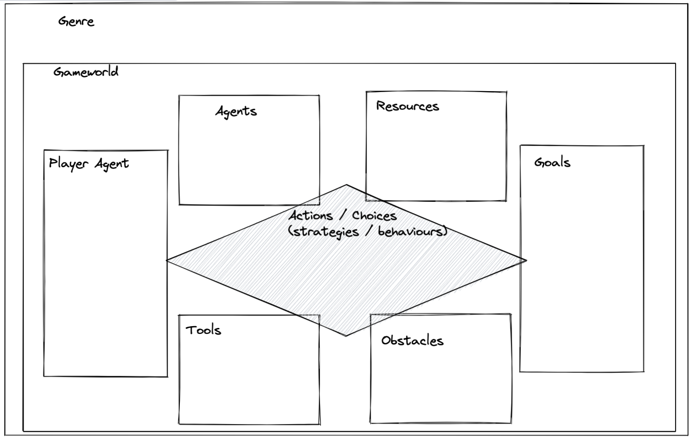

<!DOCTYPE html>
<html lang="en">
  <head>
    <meta charset="utf-8" />
    <meta name="viewport" content="width=device-width, initial-scale=1.0, maximum-scale=1.0, user-scalable=no" />

    <title></title>
    <link rel="stylesheet" href="dist/reveal.css" />
    <link rel="stylesheet" href="dist/theme/night.css" id="theme" />
    <link rel="stylesheet" href="plugin/highlight/zenburn.css" />
	<link rel="stylesheet" href="css/layout.css" />
	<link rel="stylesheet" href="plugin/customcontrols/style.css">


    <script defer src="dist/fontawesome/all.min.js"></script>

	<script type="text/javascript">
		var forgetPop = true;
		function onPopState(event) {
			if(forgetPop){
				forgetPop = false;
			} else {
				parent.postMessage(event.target.location.href, "app://obsidian.md");
			}
        }
		window.onpopstate = onPopState;
		window.onmessage = event => {
			if(event.data == "reload"){
				window.document.location.reload();
			}
			forgetPop = true;
		}

		function fitElements(){
			const itemsToFit = document.getElementsByClassName('fitText');
			for (const item in itemsToFit) {
				if (Object.hasOwnProperty.call(itemsToFit, item)) {
					var element = itemsToFit[item];
					fitElement(element,1, 1000);
					element.classList.remove('fitText');
				}
			}
		}

		function fitElement(element, start, end){

			let size = (end + start) / 2;
			element.style.fontSize = `${size}px`;

			if(Math.abs(start - end) < 1){
				while(element.scrollHeight > element.offsetHeight){
					size--;
					element.style.fontSize = `${size}px`;
				}
				return;
			}

			if(element.scrollHeight > element.offsetHeight){
				fitElement(element, start, size);
			} else {
				fitElement(element, size, end);
			}		
		}


		document.onreadystatechange = () => {
			fitElements();
			if (document.readyState === 'complete') {
				if (window.location.href.indexOf("?export") != -1){
					parent.postMessage(event.target.location.href, "app://obsidian.md");
				}
				if (window.location.href.indexOf("print-pdf") != -1){
					let stateCheck = setInterval(() => {
						clearInterval(stateCheck);
						window.print();
					}, 250);
				}
			}
	};


        </script>
  </head>
  <body>
    <div class="reveal">
      <div class="slides"><section  data-markdown><script type="text/template">
<!-- .slide: data-background-opacity="0.5" data-background-image="https://hist3812.netlify.app/images/illustrations/old-school-game-controller-vector.svg" -->

<div align="right">

### Historical Problem Space

</div>

</script></section><section  data-markdown><script type="text/template">
Jeremiah McCall:

> history is simply the curated representation of the past. The historian, the person doing history, selects sources and what they perceive as historical facts and portray the past through this curation. This makes history an interpretation, not a fixed record.
</script></section><section  data-markdown><script type="text/template">
Curation implies a choice. What guides that choice?

<aside class="notes"><p>a choice always implies a theoretical point of view, a means through which a choice is made, options evaluated: which things are deemed worthy of attention</p>
<p>McCall goes on to talk about Kapell &amp; Elliott&#39;s volume of collected essays on games:</p>
<blockquote>
<p>Kapell and Elliott rightly indicate are the most interesting questions of historical game studies, not whether &quot;a given product deviates from the historical record, but rather for what reason it does so and what effect this might have&quot; (Kapell &amp; Elliott, 2013, p.8)</p>
</blockquote>
</aside></script></section><section  data-markdown><script type="text/template">
choices, reasons, effects.
</script></section><section  data-markdown><script type="text/template">
For McCall, games are systems

Complex Systems? Or merely complicated systems?

<aside class="notes"><p>&#39;a functioning game must be a closed working set of formally -- that is mathematically -- defined systems needing player input to function. It is a historical medium different from a book, lecture, morality tale, painting or film. It is decidedly not a historical monograph, nor do its consumers wish it to be&#39;. he says we have to understand them both as systems, and as models.</p>
</aside></script></section><section  data-markdown><script type="text/template">
<p style="line-height: 0" class="reset-paragraph image-paragraph"></img></p>


The elements that make the game
</script></section><section  data-markdown><script type="text/template">
<p style="line-height: 0" class="reset-paragraph image-paragraph"></img></p>


(from McCall's article:)
-   A primary _player agent_ representing some form of historical actor tasked with one or more designer-made _goals_, ultimately expressed as victory conditions, operating within
</script></section><section  data-markdown><script type="text/template">
<p style="line-height: 0" class="reset-paragraph image-paragraph"></img></p>


-   a _virtual gameworld_, a simulated world that usually refers to specific historical locations and contains the game components, essentially the game system, within an environment and geography that includes
</script></section><section  data-markdown><script type="text/template">
<p style="line-height: 0" class="reset-paragraph image-paragraph"></img></p>


-   various _gameworld elements: agents_, _minions, resources, obstacles,_ and _tools_, whose function primarily is to enable and/or constrain the player agent in achieving those designed goals;
</script></section><section  data-markdown><script type="text/template">
<p style="line-height: 0" class="reset-paragraph image-paragraph"></img></p>


-   and so, the player forms _strategies_, makes _choices_, and adopts _behaviors_ to reach those designed goals, optimally by capitalizing on abilities and circumventing, overcoming, or working within the constraints in the game's virtual space.
</script></section><section  data-markdown><script type="text/template">
Form Shapes Content; HPS 'illuminates that reality'

</script></section><section  data-markdown><script type="text/template">

<p style="line-height: 0" class="reset-paragraph image-paragraph"></img></p>


A diagram showing McCall's analysis of Through the Darkest Times HPS  from http://www.playthepast.org/?p=7342 

<aside class="notes"><blockquote>
<p>To borrow an example from <a href="https://gamingthepast.net/2021/01/24/through-the-darkest-of-times-historical-problem-space/">McCall’s blog post</a> on <em>Through the Darkest of Times</em>: one could critique the lack of representation of other political parties in the game’s depiction of 1930s Germany, but this critique would be incomplete without considering how political parties function as an element in the game world. We cannot simply look at a game object and critique it without thinking about how it functions. <a href="https://www.dreamofdarkness.com/dev-journal/can-the-historical-problem-space-framework-help-us-make-better-history-games">https://www.dreamofdarkness.com/dev-journal/can-the-historical-problem-space-framework-help-us-make-better-history-games</a></p>
</blockquote>
</aside></script></section><section  data-markdown><script type="text/template">
> **Historically Meaningful Game Design**. Our guiding principle is that every element of the game should be considered in light of how historically _meaningful_ it is and how much it contributes to our prioritised historical discourses.
- from dream of darkness devlog may 2022  

<aside class="notes"><p>remember the difference between discourse and story? another element to consider. </p>
<p>they go on to say &gt; accuracy can be useful, but it’s even more important to mount an argument with our research and our accurate recreations. A fact is great, but unless it tells us something important, it’s not being put to its best use in our game. (This concept also allows us to create historical arguments with fantasy/supernatural elements and invention – a topic for next time, perhaps!)</p>
</aside></script></section><section  data-markdown><script type="text/template">
All of this wrapped in a meta space of 'genre' 

<aside class="notes"><p>genre is often a marketing shorthand; but mcall goes on to say, that often significantly influence designer choices of player agents/ goals/ gameworld/ gameworld elements/choices and strategies&#39;</p>
</aside></script></section><section  data-markdown><script type="text/template">
[Imperial Design](https://medium.com/@betterthemask/game-design-in-the-imperial-mode-cgsa-2022-e5a9a6a57859)

- the material constraints of designing games in a game industry

<aside class="notes"><p>this goes beyond what mccall called the meta level, the genre conventions. This is arguing that the material conditions of the labour of video game making is such that alternatives <em>can&#39;t even be attempted</em> because games must make money. Obviously, we&#39;re talking industry here; but maybe there are similar issues at play on the indie side of things? If you, the student, engage with this idea, I want to see citations to support your thought; your opinion based as a player of games is not sufficient.</p>
</aside></script></section><section  data-markdown><script type="text/template">
> What games are now is also a result of all the games that didn’t get made, work which has been suppressed and forgotten, and the shadow of all the potential work unmade by people — particularly women & marginalised people — who have quite frankly been persecuted out of the games industry.

- [Meghna Jayanth](https://medium.com/@betterthemask?source=post_page-----e5a9a6a57859--------------------------------)
</script></section><section  data-markdown><script type="text/template">
> Game design tells players who to be and what to do. I think we have to think about that nexus between player — protagonist — designer to understand how agency in games works, and how we can intervene in it as designers
</script></section><section  data-markdown><script type="text/template">
> instead of the model reader, we have the “model player” that is imagined by the game’s designers as we encode meaning into the work. The “model player” of the video game is a white man

<aside class="notes"><p>she goes on to say, The white player justifies the white designer’s own preferences, which are then normalised and replicated. Other possibilities are shut down.</p>
</aside></script></section><section  data-markdown><script type="text/template">
<p style="line-height: 0" class="reset-paragraph image-paragraph"></img></p>

</script></section><section  data-markdown><script type="text/template">The Great Crash of 1983

- what are games? The aftermath of the great crash says they are 'toys'.

<aside class="notes"><p>&#39;girls don&#39;t play video games!&#39; in early game industry, games were marketed to boys and girls. after the crash in 83, marketers tried to rebrand games as toys, and in toys, there were heavily gendered ideas, thus toy marketers decided that games must be &#39;boy&#39;...</p>
<blockquote>
<p>whiteness and masculinity are replicated over and over not out of any racial prejudice or bigotry, no, but merely because of the practicalities of the market, which is an entity largely made of fantasy and unconscious desire.</p>
</blockquote>
<blockquote>
<p>Player-centric design” is plagued by unexamined whiteness, and I believe that our reluctance as an industry to believe that players can enjoy experiences of unfairness, exclusion, limitation, powerlessness — or even just types of power outside of domination — is rooted in our internalisation of the white player. The anxiousness to “give the player what he wants”, in the sense of the ritual mantra “the customer is always right”, often runs counter to a game’s ludonarrative intentions, causing dissonance and distortion</p>
</blockquote>
</aside></script></section><section  data-markdown><script type="text/template">
Thus, HPS can be used to describe the game-as-system, but under 'genre', which constrains so much, we have to understand the material conditions of how games are produced, and the history of the creation of the 'ideal player'.
</script></section><section  data-markdown><script type="text/template">
- you are the creator designer
- hps allows you to look at your creation, and make better history 
	- ask that of your own stuff
	- this is a major element of the unessay btw!
	- does hps apply beyond games?
</script></section><section  data-markdown><script type="text/template">
Next day: we'll play a simple game and try our hand at analyzing it under the HPS framework.

See also [this example analyzing a game with HPS](https://www.playthepast.org/?p=7338)

Also, [McCall responds to Dream of Darkness' use of HPS](https://gamingthepast.net/2022/06/20/dreams-of-darkness-as-a-historical-problem-space-a-discussion/)
</script></section><section  data-markdown><script type="text/template">
McCall is speaking to Prof. Saurette's class on November 9th (1200 to 1pm).

Prof. Saurette has extended an invitation to us to join them, if we want. If you're interested, please let me know.

</script></section></div>
    </div>

    <script src="dist/reveal.js"></script>

    <script src="plugin/markdown/markdown.js"></script>
    <script src="plugin/highlight/highlight.js"></script>
    <script src="plugin/zoom/zoom.js"></script>
    <script src="plugin/notes/notes.js"></script>
    <script src="plugin/math/math.js"></script>
	<script src="plugin/mermaid/mermaid.js"></script>
	<script src="plugin/chart/chart.min.js"></script>
	<script src="plugin/chart/plugin.js"></script>
	<script src="plugin/menu/menu.js"></script>
	<script src="plugin/customcontrols/plugin.js"></script>

    <script>
      function extend() {
        var target = {};
        for (var i = 0; i < arguments.length; i++) {
          var source = arguments[i];
          for (var key in source) {
            if (source.hasOwnProperty(key)) {
              target[key] = source[key];
            }
          }
        }
        return target;
      }

	  function isLight(color) {
		let hex = color.replace('#', '');

		// convert #fff => #ffffff
		if(hex.length == 3){
			hex = `${hex[0]}${hex[0]}${hex[1]}${hex[1]}${hex[2]}${hex[2]}`;
		}

		const c_r = parseInt(hex.substr(0, 2), 16);
		const c_g = parseInt(hex.substr(2, 2), 16);
		const c_b = parseInt(hex.substr(4, 2), 16);
		const brightness = ((c_r * 299) + (c_g * 587) + (c_b * 114)) / 1000;
		return brightness > 155;
	}

	var bgColor = getComputedStyle(document.documentElement).getPropertyValue('--r-background-color').trim();

	if(isLight(bgColor)){
		document.body.classList.add('has-light-background');
	} else {
		document.body.classList.add('has-dark-background');
	}

      // default options to init reveal.js
      var defaultOptions = {
        controls: true,
        progress: true,
        history: true,
        center: true,
        transition: 'default', // none/fade/slide/convex/concave/zoom
        plugins: [
          RevealMarkdown,
          RevealHighlight,
          RevealZoom,
          RevealNotes,
          RevealMath.MathJax3,
		  RevealMermaid,
		  RevealChart,
		  RevealCustomControls,
		  RevealMenu,
        ],

		mathjax3: {
			mathjax: 'plugin/math/mathjax/tex-mml-chtml.js',
		},

		customcontrols: {
			controls: [
				{id: 'toggle-overview',
				title: 'Toggle overview (O)',
				icon: '<i class="fa fa-th"></i>',
				action: 'Reveal.toggleOverview();'
				},
			]
		},
		menu: {
			loadIcons: false
		}
      };

      // options from URL query string
      var queryOptions = Reveal().getQueryHash() || {};

      var options = extend(defaultOptions, {"width":960,"height":700,"margin":0.04,"controls":true,"progress":true,"slideNumber":true,"transition":"slide","transitionSpeed":"default"}, queryOptions);
    </script>

    <script>
      Reveal.initialize(options);
    </script>
  </body>
</html>
